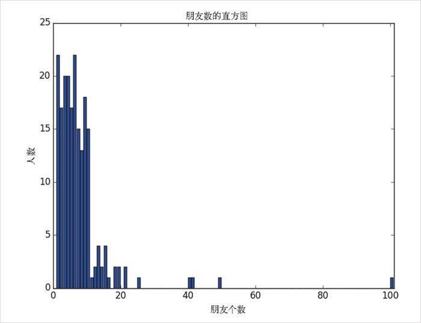

事实上，不排序也可以使用一些生僻的技巧有效地算出中位数（https://en.wikipedia.org/wiki/Quickselect ）。但这些技巧不但不易理解，而且超出了本书的讲解范围。所以我们先排序再计算。
事实上，不排序也可以使用一些生僻的技巧有效地算出中位数（https://en.wikipedia.org/wiki/Quickselect ）。但这些技巧不但不易理解，而且超出了本书的讲解范围。所以我们先排序再计算。5.1 描述单个数据集
凭借口碑与运气，DataSciencester 已经发展了数十名成员。这时，融资部门的副总来问你要一些关于你的成员有多少朋友的描述，以此来确定他潜在的电梯演说对象。
运用第 1 章中学到的技术可以很容易地生成这个数据。但你现面临的问题是如何描述 它。
对任何数据集，最简单的描述方法就是数据本身：
num_friends = [100, 49, 41, 40, 25,
# ……等等许多
]
对足够小的数据集来说，这甚至可以说是最好的描述方法。但随着数据规模变大，这就显得笨拙又含混了。（想象一个包含一亿个数字的列表。）为此，我们使用统计来提炼和表达数据的相关特征。
首先，我们通过 Couner 和 plt.bar() 把你的朋友数绘成直方图（图 5-1）：
friend_counts = Counter(num_friends)
xs = range(101) # 最大值是100
ys = [friend_counts[x] for x in xs] # height刚好是朋友的个数
plt.bar(xs, ys)
plt.axis([0, 101, 0, 25])
plt.title("朋友数的直方图")
plt.xlabel("朋友个数")
plt.ylabel("人数")
plt.show()

图 5-1：朋友数的直方图
不幸的是，这幅图难以用来进行交流，所以你需要再提炼一些统计量。数据点个数大概就是最简单的统计量了：
num_points = len(num_friends) # 204
也许你会对数据集的最大值和最小值感兴趣：
largest_value = max(num_friends) # 100
smallest_value = min(num_friends) # 1
如果你想知道特定位置的值，可以这样做：
sorted_values = sorted(num_friends)
smallest_value = sorted_values[0] # 1
second_smallest_value = sorted_values[1] # 1
second_largest_value = sorted_values[-2] # 49
当然，这仅仅是开始。
5.1.1 中心倾向
我们常常希望了解数据中心位置的一些概念。一个常用的方法是使用均值 （mean 或 average），即用数据和除以数据个数：
# 如果没有从__future__导入division，那就是不对的
def mean(x):
return sum(x) / len(x)
mean(num_friends) # 7.333333
如果你有两个数据点，均值就意味着两点的中间点。随着数据集中点数的增加，均值点会移动，但它始终取决于每个点的取值。
我们常常也会用到中位数 （median），它是指数据中间点的值（如果数据点的个数是奇数），或者中间两个点的平均值（如果数据点的个数是偶数）。
例如，如果在排序向量 x 上有五个数据点，那么中位数就是 x[5 // 2] 或 x[2] 。如果有六个数据点，则中位数是 x[2] （第三个点）与 x[3] （第四个点）的平均数。
注意——和均值不同——中位数并不依赖于每一个数据的值。例如，即便数据集中最大的点变得更大（或最小的点变得更小），中间的数据点都不会变，意味着中位数也不会变。
median 函数很可能比你想象的更复杂一些，主要是因为数据集中数据个数奇偶性的不同：
def median(v):
"""finds the 'middle-most' value of v"""
n = len(v)
sorted_v = sorted(v)
midpoint = n // 2
if n % 2 == 1:
# 如果是奇数，返回中间值
return sorted_v[midpoint]
else:
# 如果是偶数，返回中间两个值的均值
lo = midpoint - 1
hi = midpoint
return (sorted_v[lo] + sorted_v[hi]) / 2
median(num_friends) # 6.0
很明显，均值的计算更简单，并且它会随着数据变化而平稳地变化。如果有 n 个数据点，其中某一个点的值增加了 e ，则均值随之增加 e /n 。（这使得均值适用于各种微分运算）但是为了计算中位数，得先对数据排序。并且，如果其中一个数据点的值增加了 e ，那么中位数有可能也增加 e ，有可能增加一个小于 e 的数，也有可能根本不变（这取决于其他的数据）。
同时，均值对数据中的异常值非常敏感。如果最具人缘的用户有 200 个朋友（不是 100），均值会上升至 7.82，而中位数不变。如果异常值属于不良数据（或者对我们试图理解的现象不具有代表性），那么均值会误导我们。举一个老生常谈的例子，20 世纪 80 年代，北卡罗来纳大学起薪最高的专业是地理学，因为球星迈克尔 · 乔丹曾就读于此，均值计算就包含了这个“异常值”。
中位数的一个泛化概念是分位数 （quantile），它表示少于数据中特定百分比的一个值。（中位数表示少于 50% 的数据的一个值。)
def quantile(x, p):
"""returns the pth-percentile value in x"""
p_index = int(p * len(x))
return sorted(x)[p_index]
quantile(num_friends, 0.10) # 1
quantile(num_friends, 0.25) # 3
quantile(num_friends, 0.75) # 9
quantile(num_friends, 0.90) # 13
还有一个不太常用的概念众数 （mode），它是指出现次数最多的一个或多个数：
def mode(x):
"""returns a list, might be more than one mode"""
counts = Counter(x)
max_count = max(counts.values())
return [x_i for x_i, count in counts.iteritems()
if count == max_count]
mode(num_friends) # 1 和 6
但是，最常用的还是均值。
5.1.2 离散度
离散度 是数据的离散程度的一种度量。通常，如果它所统计的值接近零，则表示数据聚集在一起，离散程度很小 ，如果值很大（无论那意味着什么），则表示数据的离散度很大 。例如，一个简单的度量是极差 （range），指最大元素与最小元素的差：
# "range" 在Python中已经有特定的含义，所以我们换一个不同的名字
def data_range(x):
return max(x) - min(x)
data_range(num_friends) # 99
极差恰好为零，意味着数据集中最大值和最小值相等，这种情形只有在 x 中的元素全部相同时才会发生，意味着数据没有离散。相反，如果极差很大，说明最大元素比最小元素大很多，数据离散度很高。
和中位数一样，极差也不真正依赖于整个数据集。一个只包含 0 和 100 的数据集，和一个包含 0、1 以及很多个 50 的数据集，两者的极差相同。但看起来第一个数据集的离散度“应该”更高。
离散度的另一个更复杂的度量是方差 （variance），计算方式如下：
def de_mean(x):
"""translate x by subtracting its mean (so the result has mean 0)"""
x_bar = mean(x)
return [x_i - x_bar for x_i in x]
def variance(x):
"""assumes x has at least two elements"""
n = len(x)
deviations = de_mean(x)
return sum_of_squares(deviations) / (n - 1)
variance(num_friends) # 81.54
现在，无论我们的数据是什么单位（即“朋友”），所有中心倾向的度量都是同一单位。极差的单位也与此相同。但是，方差的单位是原数据单位的平方 （即“平方朋友”）。然而，用方差很难给出直观的比较，所以我们更常使用标准差 （standard deviation）：
def standard_deviation(x):
return math.sqrt(variance(x))
standard_deviation(num_friends) # 9.03
极差和标准差也都有我们之前提到的均值计算常遇到的异常值问题。再看之前的例子，如果我们最具人缘的用户有 200 个朋友，标准差就变为 14.89，增加了 60% ！
一种更加稳健的方案是计算 75% 的分位数和 25% 的分位数之差：
def interquartile_range(x):
return quantile(x, 0.75) - quantile(x, 0.25)
interquartile_range(num_friends) # 6
相对来说，这种计算不易受到一小部分异常值的影响。